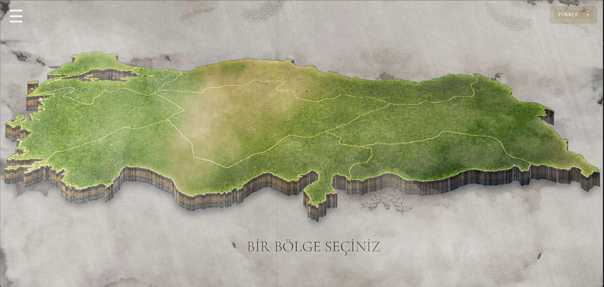
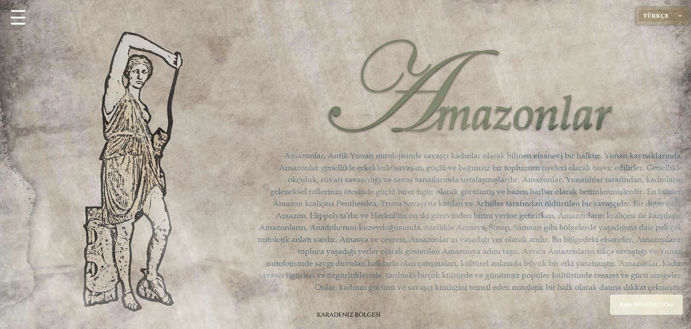
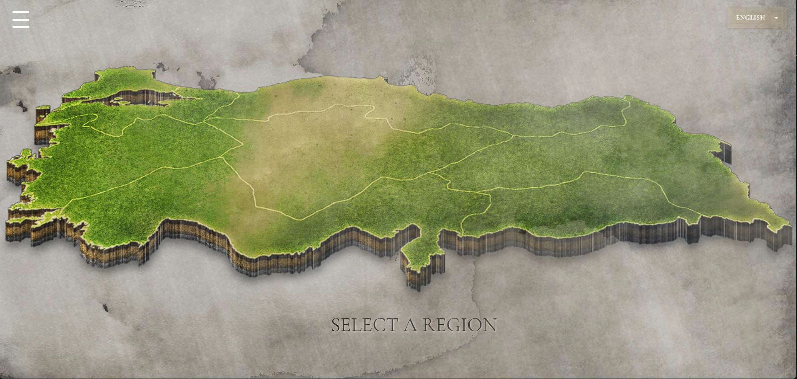
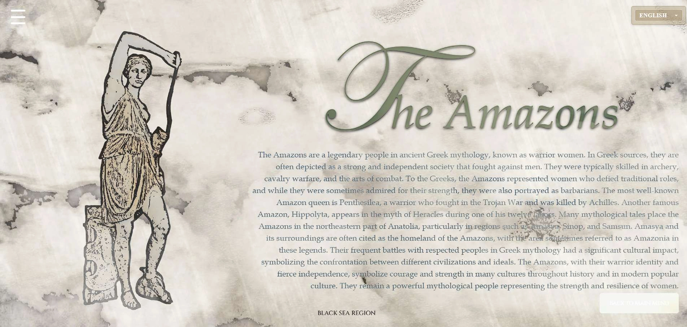

Yerelleştirme
Proje:
Anadolu Mitolojisi Haritası
Dil çifti:
Türkçe - İngilizce
Görevim:
UI/UX Tasarımı, Yapay Zeka Destekli Web Geliştirme
Açıklama:
Anadolu mitolojisini dijital bir harita üzerinden sunan interaktif ve çok dilli bir yerelleştirme projesidir.
Ekip arkadaşlarımla yürüttüğümüz bu çalışmada içerikler ortak bir stil rehberine sadık kalınarak 4 farklı dile yerelleştirilmiştir.
Sitenin arayüzü ve görsel düzenlemeleri telifsiz materyaller kullanılarak tarafımca Photoshop CC 19’da tasarlanmış; kod mimarisi ise yapay zekâ asistanları (ChatGPT, Cursor) yönlendirilerek geliştirilmiştir.



